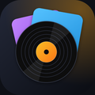

SpinVault · Última atualização: 17 de novembro de 2026
Ao instalar e usar o SpinVault, você concorda com estes termos.
O SpinVault é um aplicativo gratuito para catalogar coleções de discos, fitas e CDs. Ele é fornecido “como está”, sem garantias de qualquer tipo.
Você é o responsável pelas informações que cadastra e pelas cópias de segurança da sua coleção. O recurso de sincronização e os backups são uma conveniência e não substitui a guarda de cópias em outros locais. O desenvolvedor não se responsabiliza por perda de dados.
A sincronização usa a pasta de nuvem que você escolher (Google Drive, OneDrive, Dropbox…), e a busca de capas e dados usa MusicBrainz e Cover Art Archive. O uso desses serviços está sujeito aos termos e às políticas de cada um, e eles podem mudar ou ficar indisponíveis.
Use o aplicativo de forma lícita e sem tentar prejudicar os serviços de terceiros utilizados por ele.
Na máxima extensão permitida pela lei, o desenvolvedor não responde por danos decorrentes do uso ou da impossibilidade de uso do aplicativo.
Estes termos podem ser atualizados. O uso continuado do aplicativo após uma alteração indica a sua concordância.
Veja a Política de Privacidade. Dúvidas? Abra uma issue no repositório do projeto no GitHub.
SpinVault · Last updated: November 17, 2026
By installing and using SpinVault you agree to these terms.
SpinVault is a free app for cataloging collections of records, tapes and CDs. It is provided “as is”, without warranties of any kind.
You are responsible for the information you enter and for backing up your collection. The sync feature and backups are a convenience and does not replace keeping copies elsewhere. The developer is not liable for data loss.
Syncing uses the cloud folder you choose (Google Drive, OneDrive, Dropbox…), and cover and data lookup use MusicBrainz and the Cover Art Archive. Use of those services is subject to each provider's terms and policies, and they may change or become unavailable.
Use the app lawfully and do not attempt to harm the third-party services it relies on.
To the maximum extent permitted by law, the developer is not liable for damages arising from use of, or inability to use, the app.
These terms may be updated. Continued use of the app after a change means you accept it.
See the Privacy Policy. Questions? Open an issue in the project's GitHub repository.
SpinVault · Política de Privacidade / Privacy Policy · Termos de Serviço / Terms of Service